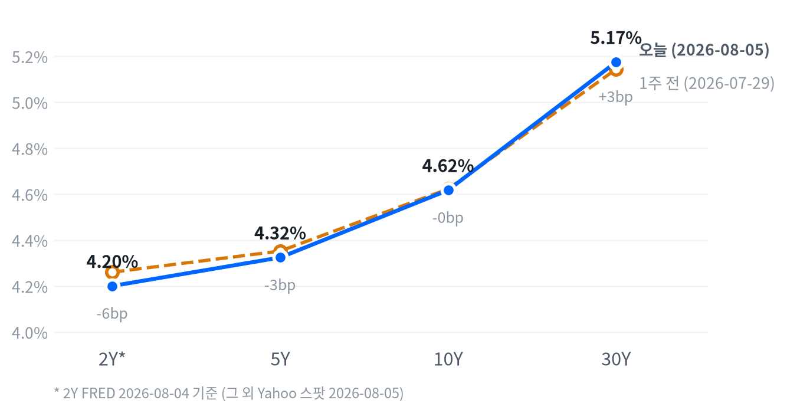

이날 장을 이끈 동인은 두 갈래로 나뉜다. 트럼프 대통령이 호르무즈 해협 재개방을 위한 이란-오만 합의 가능성을 언급하며 지정학 리스크 프리미엄이 빠르게 걷혔고, 이는 유가 하락(WTI -0.84%)과 금리 하락, 금융주 강세로 이어지며 다우를 사상 최고치로 밀어 올렸다. 동시에 전일 장 마감 후 발표된 AMD·스페이스X 실적이 매출·이익 서프라이즈에도 AI·Starlink 투자 지출 지속에 대한 우려로 가이던스가 실망스럽게 받아들여지며 나스닥·러셀2000을 끌어내려, 다우와 나스닥이 반대 방향으로 갈리는 지수 디커플링 장세가 만들어졌다.
크로스에셋 정합성은 매크로 축에서는 대체로 견고하다. 채권(전 구간 금리 하락)·원자재(WTI -0.84%)·달러(DXY -0.20%)가 모두 "지정학 리스크 완화"라는 하나의 서사로 설명되고, ADP 민간고용 서프라이즈 미스(+44K vs 컨센서스 +70K)까지 겹치며 9월 금리 인상 확률이 전일 대비 낮아진 점(FedWatch 하향)도 금리 하락과 부합한다.
다만 위험선호 회복 국면에서 금이 오히려 +5.18% 급등한 점은 통상적인 리스크온 패턴과 어긋나는데, 유가 하락에 따른 인플레이션 기대 완화가 실질금리를 낮추고 달러 약세를 부른 경로가 안전자산 수요보다 강하게 작용했다고 볼 수 있다.
다음 촉매는 이란-오만 협상의 실제 타결 여부, 8/7 발표될 7월 비농업고용(ADP 미스 이후 확인 포인트), 그리고 9월 FOMC(9/16)까지 이어질 인플레이션·고용 지표다. AMD·스페이스X발 가이던스 실망이 이번 주 다른 대형 기술주 실적으로 확산되는지, 그리고 협상이 재차 결렬돼 유가·금리가 반등하는지가 다우-나스닥 디커플링의 지속 여부를 가를 핵심 변수다.
| 지수 | 종가 | 등락 | 등락률 |
|---|---|---|---|
| Dow | 54,349.12 | +263.24 | +0.49% |
| S&P 500 | 7,723.55 | -12.97 | -0.17% |
| S&P 500 Growth | 141.24 | -0.29 | -0.20% |
| S&P 500 Value | 235.17 | -0.50 | -0.21% |
| Russell 2000 | 3,019.19 | -17.79 | -0.59% |
| Nasdaq | 26,363.44 | -221.55 | -0.83% |
| 섹터 | 종가 | 등락 | 등락률 |
|---|---|---|---|
| Health Care | 164.16 | +2.06 | +1.27% |
| Materials | 52.64 | +0.64 | +1.23% |
| Consumer Disc. | 118.64 | +0.35 | +0.30% |
| Financials | 58.00 | +0.12 | +0.21% |
| Real Estate | 45.20 | +0.03 | +0.07% |
| Industrials | 186.35 | -0.05 | -0.03% |
| Consumer Staples | 85.33 | -0.04 | -0.05% |
| Technology | 185.91 | -0.99 | -0.53% |
| Utilities | 43.66 | -0.45 | -1.02% |
| Comm. Services | 110.87 | -1.17 | -1.04% |
| Energy | 57.31 | -1.21 | -2.07% |
나스닥·S&P500은 09:30 개장 직후 장중 고점을 찍은 뒤 하루 내내 밀리며 15:30에 장중 저점을 형성했다. 나스닥은 개장가(26,695.91) 대비 고점에서 +0.15%까지 올랐다가 저점에서는 -1.30%까지 밀렸고, S&P500도 +0.28%에서 -0.66%로 낙폭을 키우며 시가 고점 이후 종가 근접 저점으로 미끄러지는 하루 종일 약세 흐름을 보였다.
러셀2000은 10:00에 장중 고점(3,048.85, 개장가 대비 +0.34%)을 찍은 점만 다를 뿐 이후 15:30 저점(-0.66%)까지 미끄러진 궤적은 대형 지수와 크게 다르지 않았다. 전일 장 마감 후 발표된 AMD·스페이스X 실적이 매출·이익 모두 컨센서스를 웃돌았음에도 AI·Starlink 투자 지출 지속 우려로 가이던스가 시장 눈높이에 못 미치면서 개장 전부터 성장주 전반에 매도 압력을 실었고, 이 압력이 정규장 내내 지수를 끌어내렸다.
엔비디아는 지수와 다른 궤적을 그렸다. 09:30 개장 직후 장중 저점(216.40달러, 개장가 대비 -0.21%)을 찍은 뒤 곧바로 반등해 10:00 고점(222.22달러, +2.47%)까지 오르고서 종가는 +3.43%(219.22달러) 강세로 마감했다. 메모리·AI 반도체 수요 강세라는 별도 재료가 지수 전반의 약세 심리와 분리돼 작동한 결과로 볼 수 있다.
이날 지수 간 디커플링은 매크로 재료(이란-호르무즈 완화)와 종목 재료(AMD·스페이스X 가이던스 실망)가 서로 다른 방향으로 작용한 결과다. 이란-오만 합의 기대로 유가가 꺾이며 신용에 민감한 은행·금융주가 강세를 보였고, 이 흐름이 Financials(+0.21%)뿐 아니라 다우 구성 종목 전반을 사상 최고치로 밀어 올렸다.
반면 Health Care(+1.27%)·Materials(+1.23%)가 상단을 차지하고 Technology(-0.53%)·Communication Services(-1.04%)·Energy(-2.07%)가 하단에 몰린 섹터 배열은 순수한 리스크온이라기보다 실적 이벤트와 유가 급락이 뒤섞인 결과에 가깝다. S&P500 Growth(-0.20%)와 Value(-0.21%)의 낙폭이 거의 같았다는 점도 이날 조정이 성장주 대 가치주 로테이션보다는 개별 대형주 가이던스 실망에 더 크게 좌우됐음을 뒷받침한다.
Energy(-2.07%)의 최대 낙폭은 유가 하락을 그대로 반영한 결과이며, 다우의 사상 최고치 경신이 나스닥의 약세를 상쇄하지 못했다는 점에서 이번 주 예정된 후속 빅테크 실적이 확인될 때까지는 성장주 비중 확대에 신중할 필요가 있다.
| 만기 | 08-05 종가 | 전일比(bp) | 1주 전 | 주간 변화(bp) |
|---|---|---|---|---|
| 2Y* | 4.20% | -5.0bp | 4.26% | -6.0bp |
| 5Y | 4.324% | -0.9bp | 4.352% | -2.8bp |
| 10Y | 4.617% | -1.0bp | 4.622% | -0.5bp |
| 30Y | 5.174% | -1.6bp | 5.143% | +3.1bp |

2Y*(FRED 2026-08-04)·5Y·10Y·30Y(Yahoo 2026-08-05) 국채금리 커브 — 별표(*) 표기된 2Y는 스팟 지수가 없어 하루 이상 뒤진 기준일의 FRED 값임에 유의. 1주 전 대비 2Y는 6.0bp, 5Y는 2.8bp, 10Y는 0.5bp 내렸지만 30Y만 3.1bp 올라 초장기 구간만 소폭 반등했다.
당일(08-05) 기준으로는 5Y·10Y·30Y 모두 하락했는데 낙폭은 30Y(-1.6bp)가 가장 크고 5Y(-0.9bp)가 가장 작아, 장기 구간이 초과 강세를 보이며 5s30s 스프레드가 하루 만에 0.7bp 좁혀지는 불 플래트닝이 나타났다. 같은 기준일(8/5, Yahoo)의 5s30s 스프레드는 85.0bp를 기록했다.
2s10s 스프레드는 표에 찍힌 기준(2Y FRED 8/4 vs 10Y Yahoo 8/5)으로 +41.7bp, 동일자 FRED 기준으로는 +43.0bp로 두 값의 차이는 1.3bp에 그쳐 날짜 불일치에 따른 왜곡은 크지 않다. 다만 2Y 자체의 일일 변화(-5.0bp)는 10Y·30Y와 기준일이 하루 어긋나 있어, 이를 곧바로 오늘 하루의 커브 변화로 단정하기보다는 참고치로 다루는 편이 안전하다.
1주 전 대비로 보면 2Y(-6.0bp, FRED)·5Y(-2.8bp)·10Y(-0.5bp)가 나란히 하락한 반면 30Y만 3.1bp 오르며 단기 구간의 불(bull) 흐름과 초장기 구간의 베어(bear) 흐름이 뒤섞인 스티프닝이 한 주간 이어졌다. 2Y의 비교 구간이 나머지 만기보다 하루 앞선 FRED 기준이라는 점을 감안하면 방향성은 참고하되 폭까지 단정하지 않는 편이 바람직하다.
듀레이션 전략 측면에서는 오늘 하루의 금리 하락이 이란-호르무즈 합의 기대라는 일회성 지정학 재료에 크게 기대고 있는 반면, 주간 기준으로는 여전히 30Y가 오름세를 이어가고 있다는 점을 함께 봐야 한다. 7월 비농업고용(8/7 발표)과 9월 FOMC(9/16)까지 굵직한 이벤트가 남아 있는 만큼 장기물 비중을 서둘러 늘리기보다 벨리(5Y) 구간 위주로 대응하고, 금요일 고용지표를 확인한 뒤 듀레이션 조정 폭을 판단하는 편이 합리적이다.
| 통화쌍 | 종가 | 등락 | 등락률 |
|---|---|---|---|
| DXY | 99.69 | -0.20 | -0.20% |
| USD/KRW | 1,422.31 | -6.19 | -0.43% |
| USD/JPY | 157.701 | +0.172 | +0.11% |
| EUR/USD | 1.1558 | +0.0051 | +0.44% |
USD/JPY는 아시아 새벽 03:30에 장중 저점(157.298엔, 개장가 대비 -0.27%)을 찍은 뒤 반등해 뉴욕장 개장 시각인 09:30에 장중 고점(157.875엔, +0.10%)까지 오르고서 종가는 157.701엔(전일比 +0.11%)으로 좁은 박스권 등락에 그쳤다.
DXY(-0.20%)는 이란-호르무즈 합의 기대에 따른 9월 금리 인상 확률 하향 조정과 궤를 같이하며 소폭 약세를 보였고, EUR/USD(+0.44%)는 달러 인덱스 약세를 거의 그대로 반영해 올랐다. USD/KRW(-0.43%)는 다우 사상 최고치·금융주 강세로 대표되는 위험선호 회복이 원화 강세로 이어진 결과로, 나스닥이 약세였던 점을 감안하면 이날 원화 강세는 지수보다 지정학 리스크 완화라는 매크로 서사에 더 가깝게 반응했다.
| 품목 | 종가 | 등락 | 등락률 |
|---|---|---|---|
| WTI | $75.13 | -0.64 | -0.84% |
| Brent | $79.51 | +0.15 | +0.19% |
| Natural Gas | $2.668 | -0.014 | -0.52% |
| Gold | $4,307.40 | +212.00 | +5.18% |
이날 최대 변동 품목은 금(+5.18%)이었다. 자정(00:00) 장중 저점(4,186.00달러, 개장가와 거의 동일)을 찍은 뒤 꾸준히 올라 14:00에 장중 고점(4,328.20달러, 개장가 대비 +3.39%)을 찍었고, 전일 종가 대비로는 4,307.40달러(+5.18%)까지 급등 마감했다. 개장가 자체가 이미 전일 대비 크게 갭업한 상태에서 장중 내내 상승세를 이어간 하루였다.
WTI는 정규장 개장 전인 06:00에 장중 고점(76.70달러, 개장가 대비 +2.86%)을 찍은 뒤 오후 13:00 장중 저점(74.45달러, -0.16%)까지 미끄러지며 하락 전환, 전일比 -0.84%(75.13달러)로 마감했다. 이란-호르무즈 해협 재개방 합의 기대가 아시아·유럽 시간대의 초반 강세를 되돌리며 정규장에서 유가를 끌어내렸다.
Brent(+0.19%)는 WTI와 달리 소폭 상승 마감해 벤치마크 간 괴리가 확인됐고, Natural Gas(-0.52%)는 원유와 같은 방향으로 하락했지만 낙폭은 크지 않았다. 금이 위험선호 회복(다우 사상 최고치) 국면에서도 큰 폭 오른 것은, 유가 하락에 따른 인플레이션 기대 완화가 금리 인상 확률을 낮추고 달러(DXY -0.20%)를 약세로 이끈 결과가 안전자산 수요보다 실질금리 하락 경로를 통해 금값을 밀어 올렸을 가능성을 시사한다.
| 자산군 | 판단 | 근거 |
|---|---|---|
| 주식 | 지수 갈림 장세, 선별적 접근 | 다우 사상 최고치 vs 나스닥·러셀 약세로 디커플링, AMD·스페이스X 가이던스 실망이 다른 빅테크 실적으로 확산되는지 확인 전까지 성장주 비중 확대는 자제 |
| 채권 | 벨리 중심 중립 듀레이션 | 당일 전 구간 금리 하락에도 주간 기준으로는 30Y가 오름세라 장기물 확대는 7월 NFP(8/7)·9월 FOMC까지 지표 흐름을 확인한 뒤 판단 |
| FX | 달러 약세 방향성 제한적 추종 | DXY·EUR/USD가 9월 인상 확률 하향과 함께 소폭 방향성을 보였으나 USD/JPY는 좁은 박스권, USD/KRW는 위험선호 회복을 반영한 원화 강세 |
| 원자재 | 유가 숏 바이어스, 금 추격매수 자제 | WTI·Brent 모두 지정학 리스크 완화로 추가 하락 여지, 금은 하루 만에 5%대 급등해 되돌림 리스크가 있어 조정 시 분할 접근이 합리적 |
| 메모리 | 한국 메모리주 모멘텀 추종, 미국 저장장치주는 선별 | SK하이닉스 무디스 신용등급 상향(Baa1→A3)·삼성전자 DRAM 점유율 1위 탈환이 펀더멘털을 뒷받침, 반면 웨스턴디지털은 실적 서프라이즈에도 순차 개선폭 둔화 우려로 급락해 종목 차별화 필요 |
| AI 인프라 | 광통신·전력인프라 조정 지속, 저가매수는 확인 후 | 마벨(-3.46%)·루멘텀(-2.73%) 등 밸류에이션 되돌림이 이어지는 반면 버티브(+2.97%)는 실적 모멘텀으로 견조, 마벨 2분기 실적(8/27 예상) 확인이 관건 |
이란-오만 합의 무산: 오늘의 지정학 리스크 완화가 실질적 타결 없이 되돌려지면 유가·금리가 반등하며 다우의 사상 최고치 경신분과 금의 급등분 일부가 함께 되돌려질 수 있다.
7월 NFP(8/7) 쇼크: ADP 민간고용 미스(+44K)가 공식 비농업고용에서도 확인되면 고용 둔화 우려가 확산돼 금리 추가 하락과 함께 주식시장 전반의 조정 압력이 커질 수 있다.
빅테크 실적 시즌 후속 실망: AMD·스페이스X의 가이던스 실망이 이번 주 예정된 다른 대형 기술주 실적으로 확산되면 나스닥·러셀2000의 약세가 심화되며 다우와의 디커플링이 더 벌어질 수 있다.
금 급등 (+5.18%, $4,307.40) — 이란-호르무즈 합의 기대에 따른 유가 하락과 9월 금리 인상 확률 하향, 달러 약세가 동시에 작용하며 하루 만에 시가총액이 1.3조 달러 늘어났다는 보도가 있다. 위험선호 회복 국면에서도 함께 오른 점이 이례적이어서, 실질금리 경로를 통한 상승인지 잔존 안전자산 수요인지 다음 며칠간의 흐름으로 확인할 필요가 있다.
웨스턴디지털 -5.36% — FY26 4분기 EPS $3.56(컨센서스 $3.27 상회)·매출 +43.8% YoY로 서프라이즈 비트를 기록했음에도, 9월분기 매출 가이던스가 시장 예상을 웃돌았지만 순차 개선 폭이 둔화되는 것으로 해석되며 차익실현 매물이 나왔다. 2026년 들어 주가가 거의 3배 오른 뒤였던 만큼 밸류에이션 부담도 하락 배경으로 지목된다.
한국 메모리주 반등 (SK하이닉스 +5.77%·삼성전자 +2.50%) — 무디스가 SK하이닉스 신용등급을 Baa1에서 A3로 상향했고, 삼성전자는 2분기 DRAM 시장점유율 39%로 SK하이닉스를 제치고 1위를 탈환했다는 보도가 겹치며 AI 데이터센터發 DRAM·HBM 수요 강세 기대를 재확인시켰다.
| 종목 | 종가 | 등락 | 등락률 |
|---|---|---|---|
| SK hynix | ₩1,668,000 | +91,000 | +5.77% |
| Nvidia | $219.22 | +7.28 | +3.43% |
| Samsung Elec | ₩246,000 | +6,000 | +2.50% |
| Micron | $893.19 | +0.52 | +0.06% |
| Seagate | $837.66 | -7.69 | -0.91% |
| Western Digital | $519.17 | -29.39 | -5.36% |
웨스턴디지털(-5.36%)은 FY26 4분기 실적에서 EPS $3.56(컨센서스 $3.27 상회), 매출 +43.8% YoY $37.5억으로 서프라이즈 비트를 기록했음에도 주가는 급락했다. 9월분기 가이던스가 매출 $41억(컨센서스比 +1.5%)으로 시장 예상을 웃돌았지만 매출·마진·이익의 전분기 대비 순차 개선 폭이 둔화되는 것으로 받아들여지며 차익실현이 나왔고, 2026년 들어 주가가 거의 3배 오른 뒤였던 만큼 밸류에이션 부담도 함께 지목됐다.
SK하이닉스(+5.77%)·삼성전자(+2.50%)는 한국 메모리주 반등을 이끌었다. 무디스는 SK하이닉스 신용등급을 Baa1에서 A3로 상향했는데, 향후 12~18개월 견조한 수익성과 현금창출력을 근거로 들었고, 삼성전자는 2분기 DRAM 시장점유율 39%로 SK하이닉스를 제치고 1위를 탈환했다는 보도가 함께 나왔다. 두 소식 모두 AI 데이터센터發 DRAM·HBM 수요 강세와 공급 제약에 따른 가격 강세를 배경으로 지목한다.
마이크론(+0.06%)은 사실상 보합에 머물렀다. 업계 보도는 마이크론이 2분기 DRAM 점유율을 22%에서 25%로 끌어올려 SK하이닉스(26%)를 근접 추격하고 있고 DRAM 계약가가 이번 분기 58~63% 급등했다고 전하지만, 최근 랠리에 이미 선반영된 탓인지 이날 주가 자체는 뚜렷한 반응을 보이지 않았다. 투자 관점에서는 웨스턴디지털의 가이던스 둔화 신호가 저장장치 업황 전반의 고점 논쟁으로 번질지, 아니면 개별 밸류에이션 조정에 그칠지가 다음 확인 포인트다.
| 종목 | 분야 | 종가 | 등락 | 등락률 |
|---|---|---|---|---|
| Vertiv | 데이터센터 냉각/전력관리 | $277.94 | +8.01 | +2.97% |
| Coherent | 광통신 부품 | $328.22 | +4.49 | +1.39% |
| GE Vernova | 전력 인프라/터빈 | $1,017.96 | -0.57 | -0.06% |
| Lumentum | 광통신 부품 | $826.26 | -23.21 | -2.73% |
| Marvell | 반도체/데이터센터 커넥티비티 | $211.02 | -7.57 | -3.46% |
마벨(-3.46%)은 7월 말부터 이어진 AI 메모리·광통신 트레이드 되돌림의 연장선에 있다. 고점 대비 약 40% 하락한 상태이며 하이퍼스케일러 AI 자본지출의 지속가능성에 대한 투자자 회의론이 하락 배경으로 지목되고, 다음 실적 발표는 8월 27일로 예상된다.
루멘텀(-2.73%)은 연초 대비 +71%에 달하는 큰 폭 상승 이후 트레일링 PER 약 110배의 밸류에이션 부담 속에 차익실현 매물이 나왔다. 특정 악재보다는 밸류에이션 재평가 국면에 가깝고, 코히런트(+1.39%)는 7월 말 코닝發 광통신주 급락(-9~12%) 이후 저가매수와 JPMorgan(목표가 $380→$435)·BNP파리바(목표가 $380→$415)의 목표가 상향이 반등을 뒷받침했다. 코히런트의 다음 실적은 8월 12일이다.
버티브(+2.97%)는 AI 데이터센터의 전력·냉각 수요 확대가 이어지는 가운데 최근 2분기 실적에서 매출 +24% YoY, 마진 400bp 이상 확대, EPS +50% 이상, 잉여현금흐름 +234%를 기록하고 2026년 연간 가이던스를 상향한 점이 투자심리를 지지했다. 차세대 GPU의 발열량 증가에 따른 액체냉각 채택 가속도 함께 언급되며, GE 버노바(-0.06%)는 사실상 보합에 머물러 특별한 개별 재료가 확인되지 않았다. 투자 관점에서는 광통신 부품주의 밸류에이션 되돌림이 언제 진정되는지와 마벨의 2분기 실적이 다음 확인 포인트다.
| 지표 | Actual | Forecast | Previous | 발표일/기준 | 판정 |
|---|---|---|---|---|---|
| Initial Jobless Claims (07-25주) | 197K | 200~201K | 188K | 2026-07-31 발표 | 하회▼ |
| Initial Claims 4주 이동평균 | 202.75K | — | 207.75K | 2026-07-31 발표 | — |
| Continuing Jobless Claims (07-18주) | 1,782K | — | 1,789K | 주간 발표 | — |
| ADP 민간고용 (전월비) | +44K | +70K | +95K(수정) | 2026-08-05 발표 | 하회▼ |
| JOLTS 구인건수 | 7,359K | — | 7,537K | 기준월: 2026-06 | — |
| 비농업고용 (전월비) | +57K | — | +129K | 기준월: 2026-06 | — |
| 실업률 | 4.2% | — | 4.3% | 기준월: 2026-06 | — |
| 시간당 평균임금 MoM | +0.35% | — | +0.27% | 기준월: 2026-06 | — |
| 지표 | Actual | Forecast | Previous | 발표일/기준 | 판정 |
|---|---|---|---|---|---|
| ISM 서비스업 PMI (7월) | 54.1 | — | 54.0 | 2026-08-05 발표 | — |
| 실질GDP 성장률 (연율, 2Q26) | +1.5% | — | +2.1% | 기준분기: 2026 2Q | — |
| 산업생산 MoM | +0.08% | — | +0.14% | 기준월: 2026-06 | — |
| 내구재수주 MoM | +0.47% | — | -4.00% | 기준월: 2026-06 | — |
| 신규주택판매 | 628K | — | 618K | 기준월: 2026-06 | — |
| 기존주택판매 | 4.09M | — | 4.19M | 기준월: 2026-06 | — |
| 지표 | Actual | Forecast | Previous | 발표일/기준 | 판정 |
|---|---|---|---|---|---|
| 소매판매 MoM | +0.22% | — | +1.02% | 기준월: 2026-06 | — |
| 미시간대 소비자심리지수 | 49.5 | — | 44.8 | 기준월: 2026-06 | — |
| 지표 | Actual | Forecast | Previous | 발표일/기준 | 판정 |
|---|---|---|---|---|---|
| CPI YoY | 3.73% | — | 4.27% | 기준월: 2026-06 | — |
| CPI MoM | -0.42% | — | +0.47% | 기준월: 2026-06 | — |
| Core CPI YoY | 2.81% | — | 2.96% | 기준월: 2026-06 | — |
| Core CPI MoM | -0.02% | — | +0.21% | 기준월: 2026-06 | — |
| PPI 최종수요 MoM | -0.28% | — | +0.62% | 기준월: 2026-06 | — |
| PCE 물가지수 YoY | 3.67% | — | 4.08% | 기준월: 2026-06 | — |
| Core PCE YoY | 3.29% | — | 3.42% | 기준월: 2026-06 | — |
| 미시간대 1년 기대인플레이션 | 4.6% | — | 4.8% | 기준월: 2026-06 | — |
이날 국채금리는 전 구간에서 소폭 하락했고(10Y -1.0bp, 30Y -1.6bp), 이는 이란-호르무즈 합의 기대에 따른 유가 급락이 인플레이션 우려를 낮춘 결과와 궤를 같이한다. ADP 민간고용이 컨센서스(+70K)를 크게 밑도는 +44K로 발표되며 고용 모멘텀 둔화 신호가 겹쳤고, 초회 실업수당청구(197K)는 컨센서스(200~201K)를 하회해 고용시장이 예상보다는 견조하다는 평가를 함께 받았다.
9월 FOMC(9/16) 금리 경로에 대해서는 Yahoo Finance가 이날 이란-호르무즈 합의 기대로 유가가 급락하며 9월 금리 인상 확률이 전일 67%에서 약 57%로 낮아졌다고 보도했고, CME FedWatch를 집계하는 MacroMicro는 8/4일 기준 25bp 인상 확률을 61.9%로 제시해 소스 간 수치 차이가 존재한다. 시점과 집계 방식 차이로 추정되지만 두 수치 모두 "9월 인상 가능성이 과반"이라는 방향성은 일치한다.
ADP 미스에도 임금 상승률(YoY +4.4%, 이직자 +7%)은 견조하게 유지돼 "고용은 식지만 임금은 끈적한" 조합으로 요약되며, 컨센서스와의 괴리는 시장이 인상 우세 시나리오를 다소 되돌리는 방향으로 재가격했다는 신호로 읽힌다.
Labor축은 혼조다. 선행성 주간 지표인 초회 청구(197K, 전주 대비 상승했지만 컨센서스는 하회)와 4주 이동평균(202.75K, 개선)은 엇갈렸고, ADP 민간고용(+44K)이 컨센서스를 큰 폭 하회하며 8/7 발표될 공식 비농업고용에 대한 경계감을 높였다. 후행 지표인 6월 실업률(4.2%)은 5월(4.3%) 대비 개선됐지만 같은 달 비농업고용(+57K)은 전월(+129K) 대비 둔화돼, 선행 서베이의 경고음과 후행 확정치 사이에 온도차가 있다.
Activity축은 완만한 개선이다. 선행 지표인 ISM 서비스업 PMI(54.1)가 전월(54.0) 대비 소폭 올라 확장세를 유지했고 내구재수주(+0.47%)도 전월(-4.00%)의 급락에서 반등했지만, 후행 지표인 2분기 실질GDP(+1.5%)는 1분기(+2.1%) 대비 둔화돼 서베이의 안정세가 확정 지표에서는 아직 완전히 확인되지 않았다.
Consumption축은 선행-후행 괴리가 이어지고 있다. 미시간대 소비자심리(49.5)가 전월(44.8) 대비 큰 폭 개선된 선행 신호를 냈지만, 실제 지출을 보여주는 소매판매 MoM(+0.22%)은 전월(+1.02%) 대비 증가세가 크게 둔화돼 심리 개선이 지출 확대로 아직 이어지지 않고 있다. Inflation축은 CPI·Core CPI·PCE·Core PCE YoY가 모두 전월보다 낮아졌고 미시간대 1년 기대인플레이션(4.6%)도 전월(4.8%)보다 완화돼, 디스인플레이션이 실제 물가와 기대인플레이션 양쪽에서 함께 진행되는 선행-후행 일치 축으로 남아 있다.
기본 시나리오는 완만한 성장 둔화 속 디스인플레이션이 이어지는 경로다. CPI·Core PCE YoY가 6월 기준 이미 3%대까지 낮아진 가운데 이날 유가 급락(WTI -0.84%)까지 더해지면 다음 CPI 발표에서 추가 둔화가 확인될 가능성이 있고, ADP 미스로 대표되는 고용 냉각 신호는 연준의 9월 인상 논의에 제동을 거는 방향으로 작용할 수 있다.
대안 시나리오는 ISM 서비스업의 완만한 확장세가 이어지며 임금(ADP 기준 YoY +4.4%)이 끈적하게 유지되는 경로다. ADP 미스가 일회성 조정에 그치고 8/7 공식 비농업고용이 예상보다 견조하게 나오면, 이란-호르무즈 협상 결과와 무관하게 9월 인상 논의가 다시 힘을 받을 수 있다.
시나리오를 가를 핵심 일정은 8/7 발표될 7월 비농업고용, 다음 FOMC(9/16)까지 이어질 인플레이션 지표, 그리고 이란-오만 협상의 실제 타결 여부다. 자산배분 관점에서는 장기 듀레이션 확대와 유가 방향성 베팅 모두 이 일정들을 확인한 뒤 단계적으로 조정하는 편이 합리적이다.